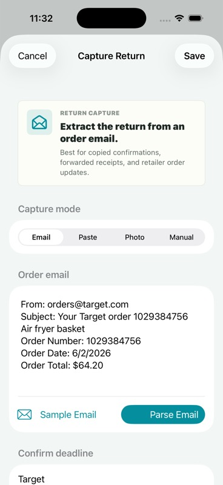

Capture
Paste receipt text, choose a receipt photo, forward an order email, or share receipt text into the app.
Receipt deadlines without the spreadsheet
Return To helps you catch return windows before they close. Paste, scan, forward, or share receipts into one quiet return queue.
Every receipt import goes through a confirmation step before it becomes a watched return. The app is built to be useful without account setup.
Paste receipt text, choose a receipt photo, forward an order email, or share receipt text into the app.
Review the merchant, item, amount, order number, purchase date, and likely return deadline before saving.
Track proof, policy notes, packaging, drop-off decisions, and status from a dedicated Return Prep checklist.
Use deadline filters and reminders to act before a return window becomes missed money.

Built for local review
Return To opens shared receipts directly into the existing capture flow, so a user can inspect the parsed fields instead of trusting an invisible automation.
The site and app do not use advertising trackers.
The app can parse and store returns locally when hosted sync is unavailable.
Forwarded receipt emails are scoped to a private install token before appearing in review.
Last updated June 5, 2026. This policy covers the Return To iOS app, hosted review API, email forwarding flow, and this website.
Use this for App Store support metadata and early user help while Return To is in review readiness.
Email scottolmer@gmail.com with Return To support questions, privacy requests, bug reports, or receipt import issues.